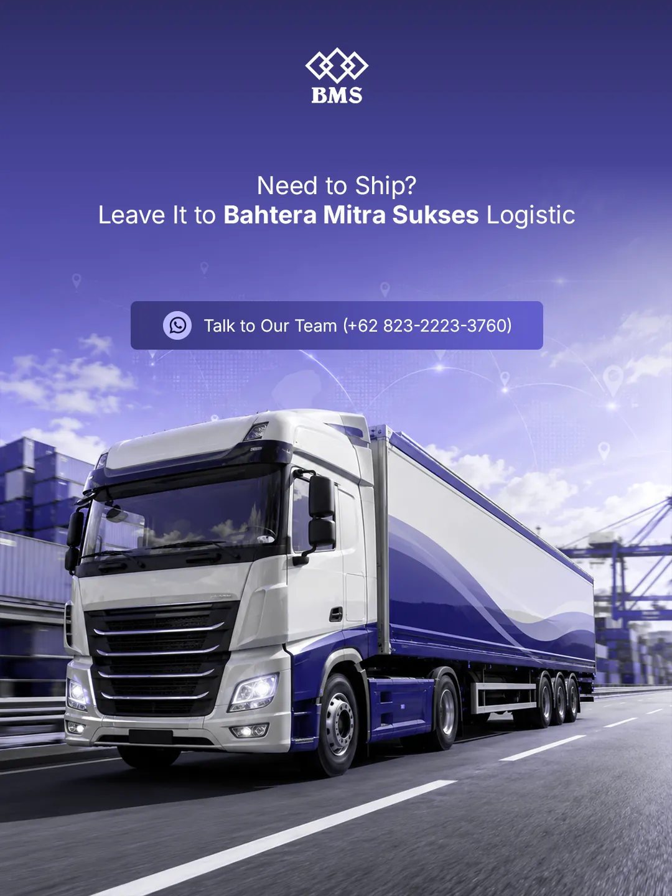
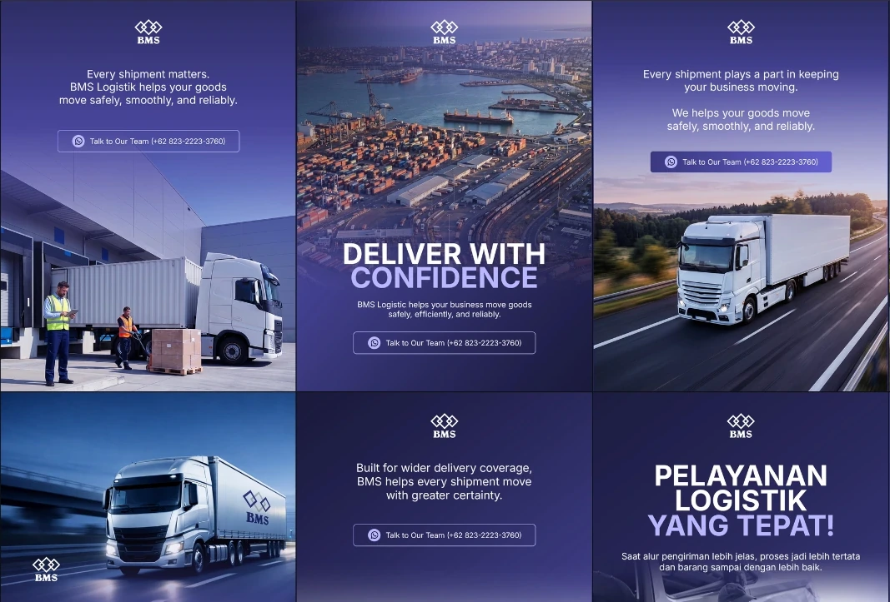
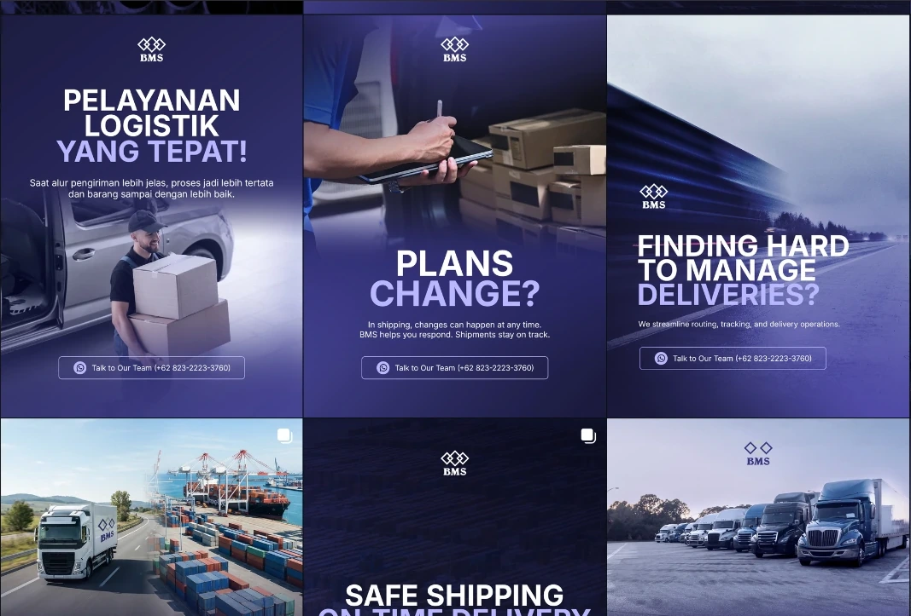
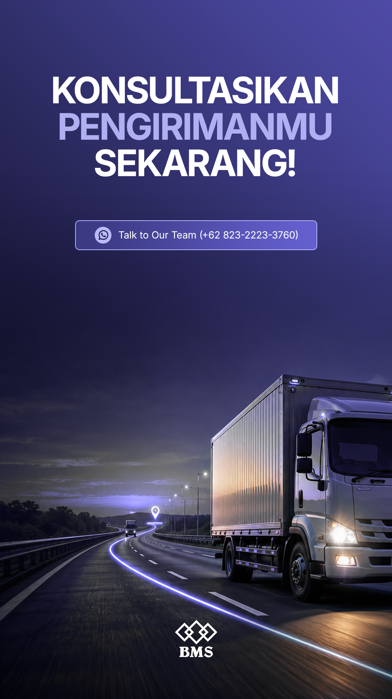
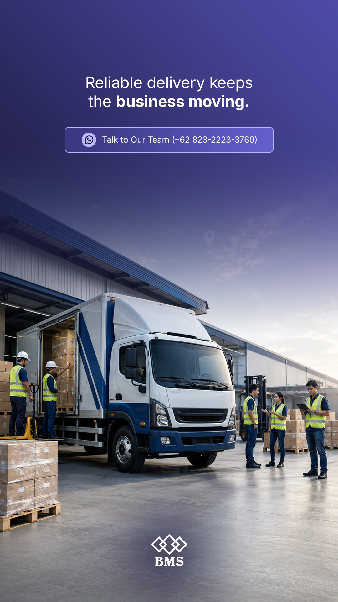
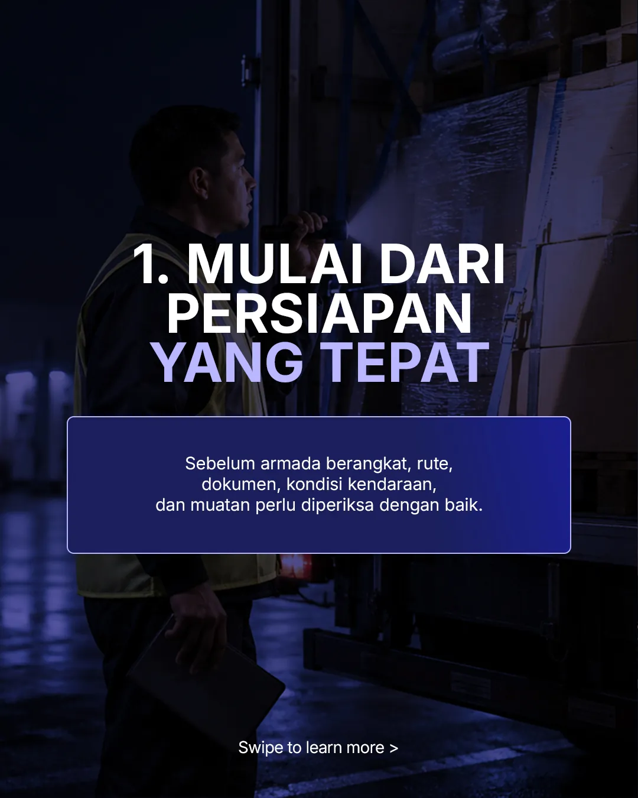
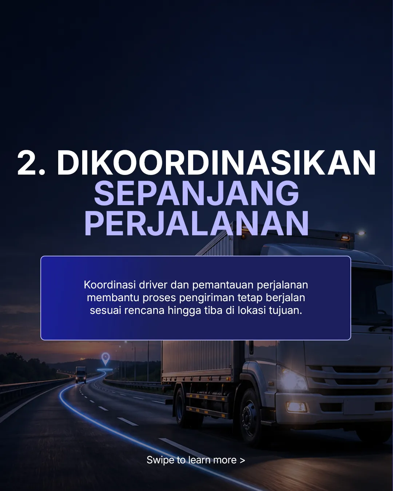
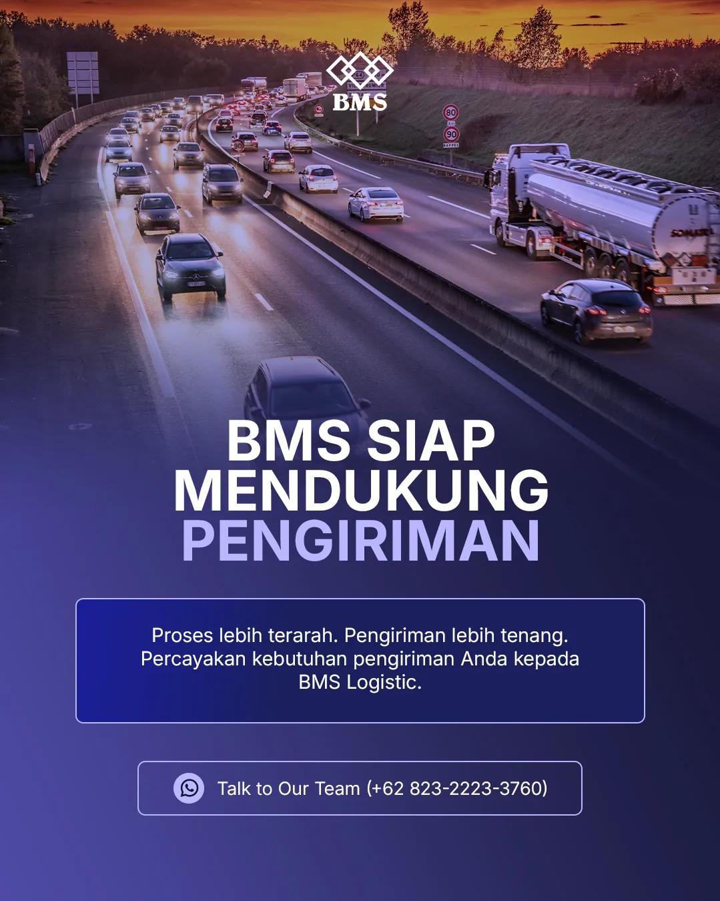

Context
Logistics communication can feel technical, generic, and hard to scan. BMS needed a visual language that could explain real operations with more clarity and credibility.
B2B communication · Logistics
A structured content system that turns complex services into communication businesses can understand—and trust.

Project overview
Logistics communication can feel technical, generic, and hard to scan. BMS needed a visual language that could explain real operations with more clarity and credibility.
Deep indigo, bold headlines, operational photography, and modular content blocks make every message easier to scan—without losing consistency.
05 / Feed system
Cropped feed boards place the content system at the center, making hierarchy, consistency, and campaign rhythm easier to assess.


04 / Story formats
The story work follows the exact same presentation system used across the website: two equal phone stages, consistent captions, and preserved 9:16 compositions.


03 / Process education
Sequential content uses the same hierarchy and visual language to explain a more complex process without adding clutter.


02 / Service communication
A controlled two-column rhythm gives each message enough space while keeping the overall system visually connected.


Outcome
The result is a more credible brand presence—built to explain services, reassure clients, and stay consistent over time.